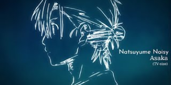

NATSUME NOISY
Quand les plus beau moments aurais mérité d'être figé dans le temps
Natsume noisy est une musique de J-pop parue le 10/08/2022, interprétée par la chanteuse Asaka et créée et écrite par shikura chiyomaru. Cette musique a été réalisée pour servir de second générique à la série time shadow en même temps que Voice et dreamer aussi réaliser par le même duo pour servir de musique de fond, time shadow étant une série de genres drame/mystère/romance/surnaturelle et de thèmes crime/famille/voyage temporel.
Mais qui sont asaka et shikura chiyomaru ?

Asaka est une chanteuse de pop, Choriste et Parolière japonaise de 23 ans, appartenant au groupe “Okunai Katsudou Circle”, et passionné de cosplay et d’animé, elle a réalisé 2 albums “HEART TOUCH” et “19BOX” mais,aussi 10 autres musiques.
De son côté shikura chiyomaru est un Auteur, Compositeur, Musicien, Parolier japonais de 52 ans, faisant partie de l’agence MAGES et du groupe DystopiaGround. Il est principalement connu pour avoir réalisé plusieurs génériques et ost pour la série des steins gate.
accessible
Oui pour toute les personne entendante
Marketing
De nos jours, beaucoup de groupe de musique du style J Pop promeuvent leurs album en réalisant pour les studio d’animation, des musique de générique ou d'ambiance, dans le cas de notre musique, celui ci a était donc réaliser comme étant l’un des générique de l’adaptation animé de time shadow, malheureusement, d’un point de vue mondial, ce choix fut une grande erreur car la série n’a été diffusée qu’au japon.
Conclusion
natsume noisy pourra plaire à toute à chacun mais seul les fan de time shadow pouvons vraiment attiré par la musique car elle n’a pas était créer par un groupe de musique mais uniquement par un duo, lui donnant comme seul possibilité d'affect, son lien avec cette série